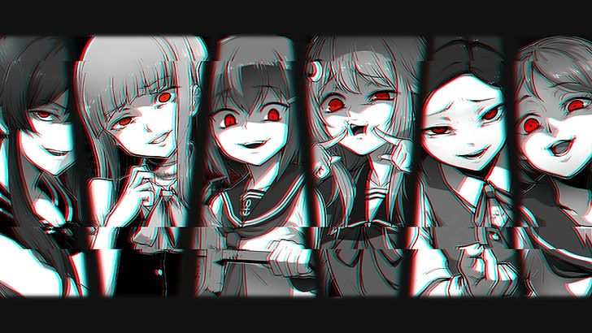

¿QUE SON LOS MANGAS?
Los mangas son cómics o historietas de origen japonés que se han convertido en una parte fundamental de la cultura popular del país y, con el tiempo, han ganado millones de seguidores en todo el mundo. A diferencia de los cómics occidentales, los mangas se leen de derecha a izquierda, lo cual forma parte de su encanto y autenticidad. Generalmente están en blanco y negro, aunque existen ediciones a color. Cada obra puede contar con ilustraciones detalladas, emociones expresivas y tramas profundas que capturan al lector desde las primeras páginas.
El mundo del manga es inmenso y abarca una amplia variedad de géneros y temáticas. Existen mangas dirigidos a niños (kodomo), adolescentes (shōnen y shōjo), adultos jóvenes (seinen y josei) e incluso públicos más específicos. Desde historias de acción, ciencia ficción y fantasía, hasta dramas escolares, romances cotidianos o relatos históricos, hay un manga para cada tipo de lector. Además, muchas de estas obras han sido adaptadas al anime, ampliando aún más su alcance cultural y emocional. Leer manga no solo es una forma de entretenimiento, sino también una manera de conocer valores, tradiciones y aspectos sociales del Japón moderno y antiguo.